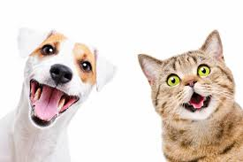

En el Refugio de Animales "Amor y Esperanza", estamos comprometidos a proporcionar un lugar seguro y amoroso para animales abandonados y perdidos. Nuestra misión es rescatar, rehabilitar y reubicar a estos animales en hogares permanentes y cariñosos.
En "Amor y Esperanza", creemos que todos los animales merecen una segunda oportunidad. Nos dedicamos a:
Ofrecemos una variedad de servicios para asegurar el bienestar de nuestros animales y facilitar la adopción:
Es muy juguetón, se recomienda tener un espacio grande porque lo que más le gusta es correr, deben de saber tratarlo y cuidarlo, perfecto para que sea tu mejor amigo.

Llamada Lola de apenas 3 meses de nacida, es muy juguetona y traviesa, perfecta para que sea tu mejor amiga!!!
Es un perrito de 1.5 años, es muy juguetón y perfecto para convivir con niños, a la vez es muy tranquilo y ya está educado para obedecer órdenes claras.